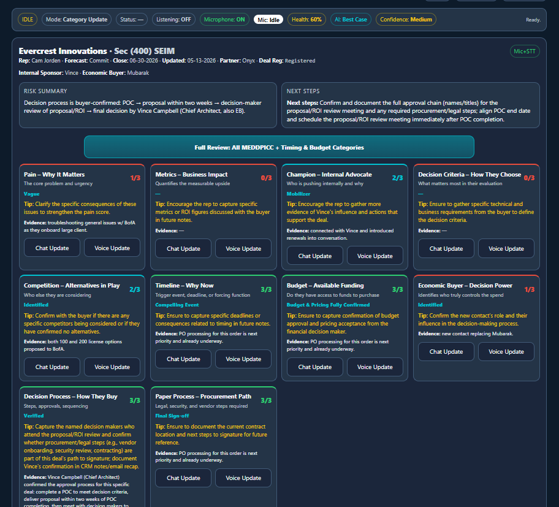
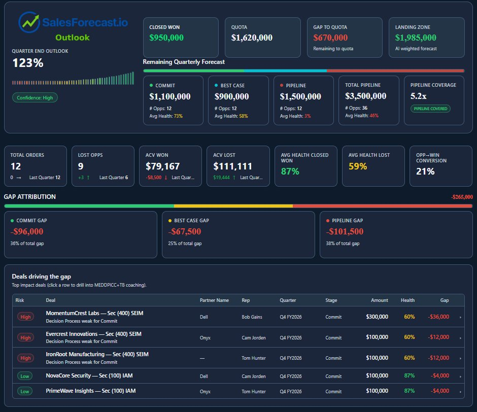
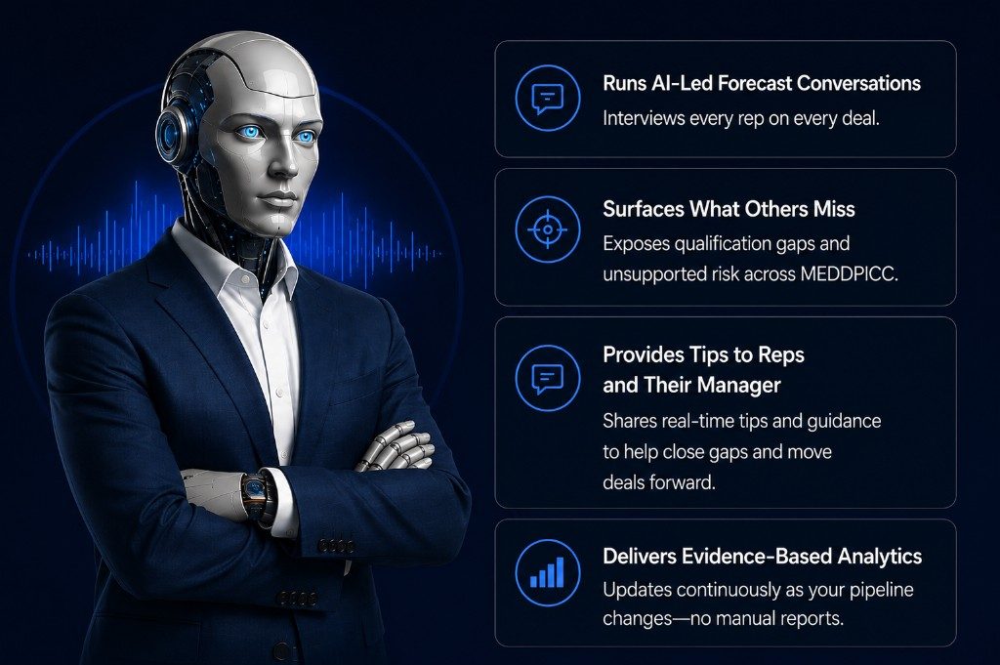
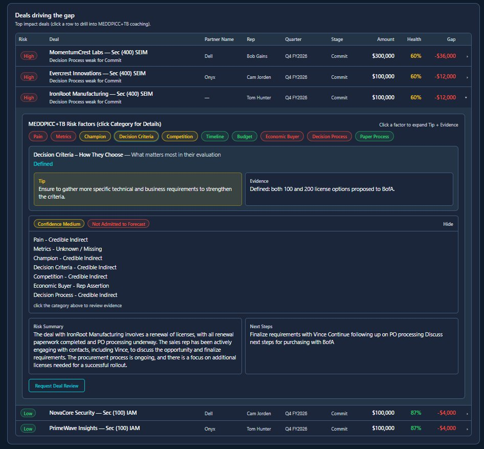
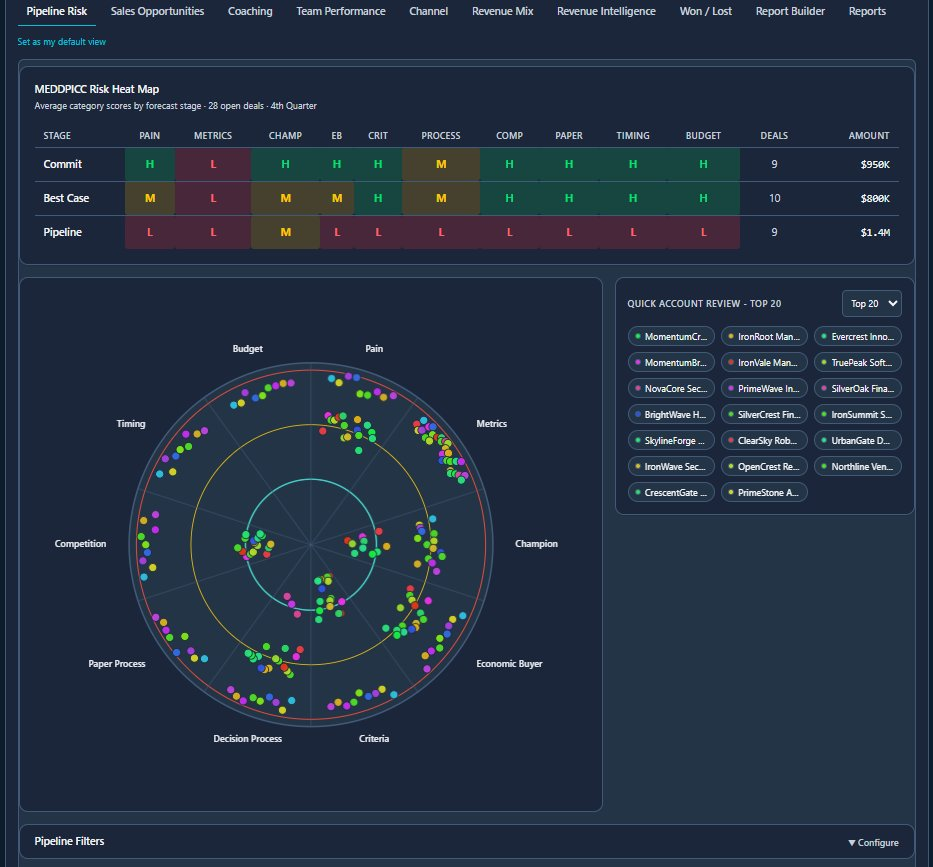
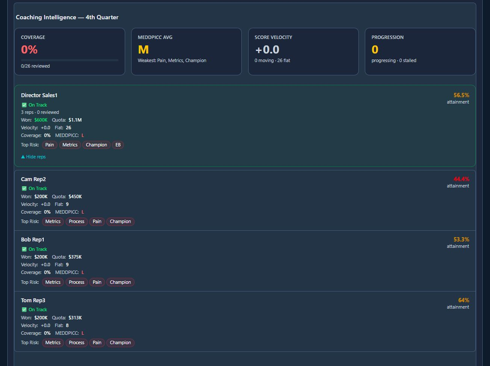
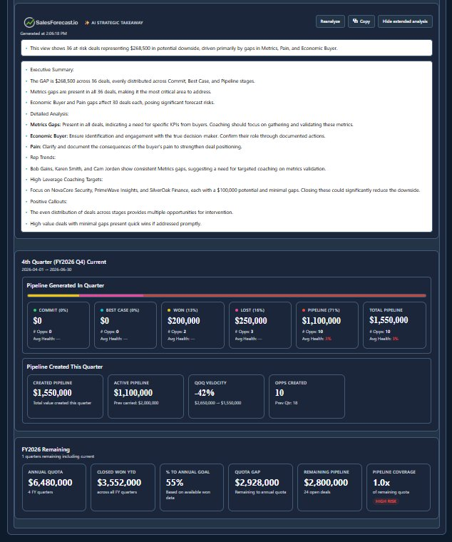
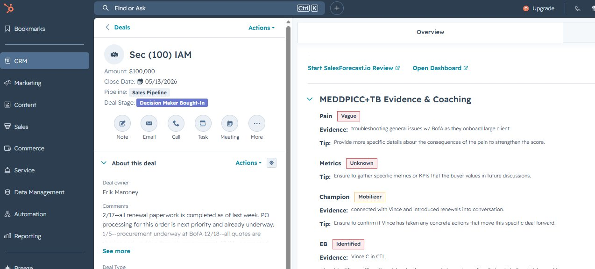
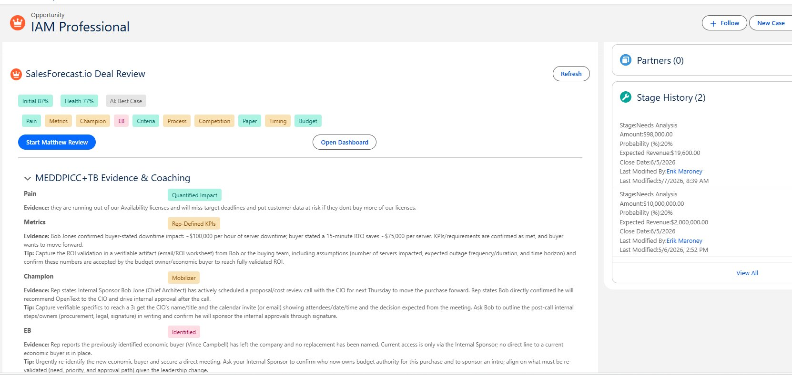

CRM Platforms
- Passive CRM scoring
- Activity signals
- Stage movement
- Historical CRM interpretation
Matthew runs AI-led deal reviews with every rep—validating MEDDPICC evidence, exposing unsupported commits, and surfacing coaching actions for leaders.
Know which commits are real—so you can fix weak commits before they miss.
Matthew runs AI-led forecast reviews with every rep, validates MEDDPICC evidence, flags unsupported commits, and gives sales leaders time back to coach instead of chase forecast updates.

Forecast analytics platforms help manage forecasts. Call recording platforms analyze conversations. CRM platforms score activity. Matthew runs the missing forecast conversation with every rep—validating MEDDPICC evidence before weak commits become missed forecasts.
Matthew doesn’t just review deals—he continuously surfaces unsupported commits, forecast risk, coaching opportunities, and evidence-backed insights so leaders can forecast with confidence.

AI-led deal inspection that helps reps prepare, improves customer conversations, and gives sales leaders evidence they can trust.
Matthew is your AI Forecast Assistant. He interviews every rep on every active deal, identifies what is missing, and shares practical guidance with reps and sales leaders to help close qualification gaps before they impact the forecast.
The fastest way to understand SalesForecaster is to watch Matthew run a real forecast conversation.

Interviews every rep on every active deal.
Exposes qualification gaps and unsupported risk across MEDDPICC.
Shares real-time tips and guidance to help close gaps and move deals forward.
Updates continuously as your pipeline changes — no manual reports.
Revenue leaders need a governance layer that separates real forecast confidence from hopeful stage movement.
Compare CRM forecast optimism against AI-scored deal evidence, stage risk, and confidence.
Expose deals marked Commit without buyer-verified metrics, process, budget, timing, or economic buyer access.
Turn forecast calls into coaching sessions. Leaders know the risk before the meeting starts.
SalesForecaster.io audits each forecasted deal against actual qualification evidence. When the CRM says Commit but the evidence is thin, leaders see the gap immediately.

Matthew powers the structured reviews. Leaders get forecast governance, gap attribution, coaching intelligence, and executive-ready analytics.
Every deal is scored across all 10 qualification categories, with evidence, coaching tips, risk summary, and next steps.
See where risk clusters across Pain, Metrics, Champion, Economic Buyer, Process, Paper, Timing, Budget, and more.

Managers see coverage, progression, score velocity, and the specific categories where each rep needs help.

Generate executive summaries on gap drivers, coaching priorities, high-leverage deals, and forecast risk.

SalesForecaster.io uses a 0-3 evidence scale so deal health reflects what is verified, not what the rep hopes is true.
Launch deal reviews, view health MEDDPICC+TB health scores, read coaching tips, and inspect evidence directly from CRM deal records.


Quarter-end outlook, commit risk, pipeline coverage, gap attribution, and deals driving downside.
Deal review requests, coaching priorities, MEDDPICC gaps, and rep-level progression visibility.
Clear next steps, deal health, evidence gaps, and review requests without surprise forecast call interrogations.
Built for B2B teams that already run forecast calls and need stricter deal evidence without adding RevOps headcount.
For up to 5 sales reps and 2 sales leaders.
For larger teams, multi-manager rollups, channel motions, and expanded reporting.
See how SalesForecaster.io exposes unsupported commits, deal risk, and coaching priorities inside your existing CRM motion.
Works with your existing CRM